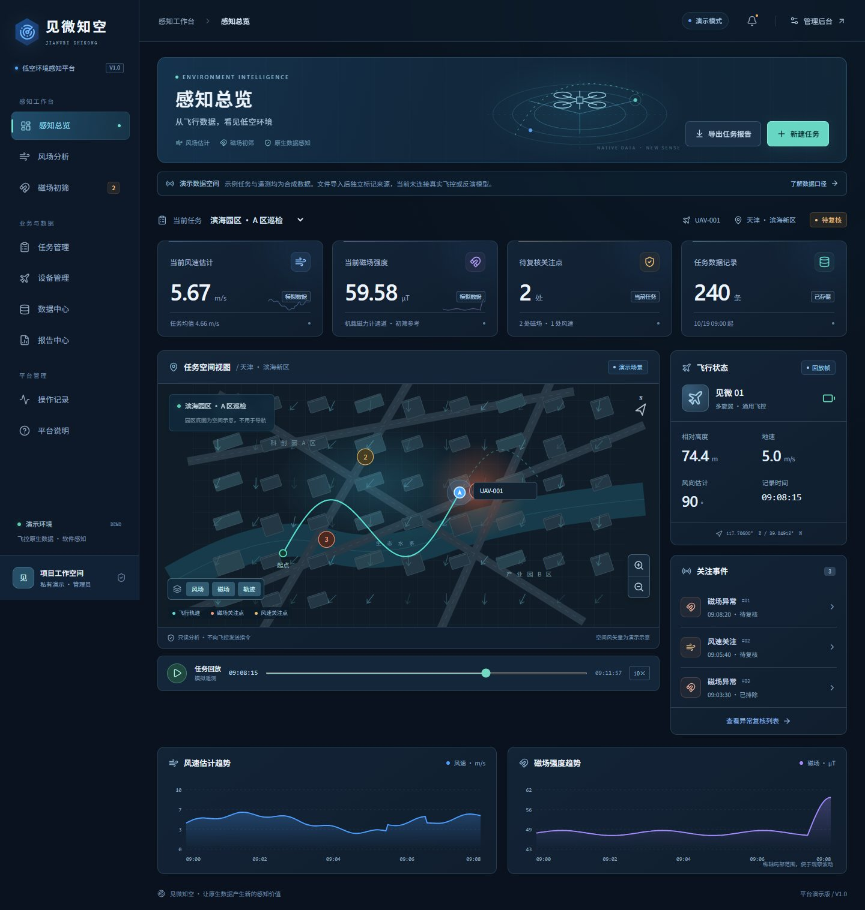
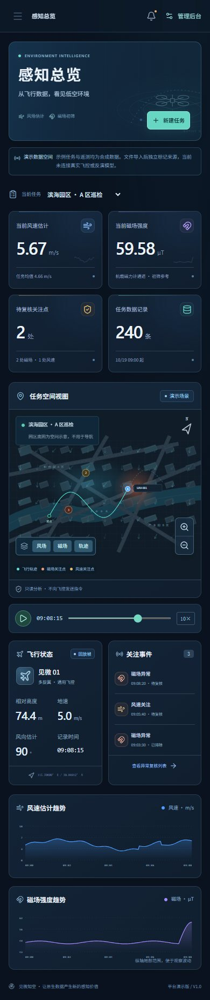
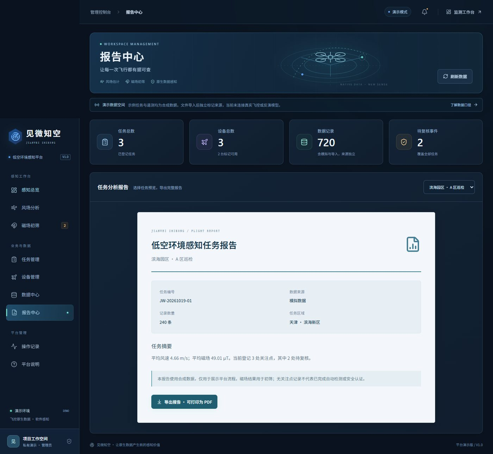

Low-Altitude Environment Intelligence
见微知空 · 低空环境感知平台
用飞控已有的 IMU、磁力计、位置、姿态与动力状态数据，做风场估计与磁场异常初筛，把每一次飞行沉淀为可追溯的低空环境记录。
这是什么WHAT IT IS
一个可运行的低空环境感知演示系统：可视化工作台、管理后台、服务端接口与持久化数据库。公开访客无需登录即可浏览固定合成演示——回放轨迹、切换任务、查看关注点、导出任务报告。
感知总览
风速估计、磁场强度、待复核关注点与任务数据量的四项摘要，配合飞行状态与趋势曲线。
风场分析
园区空间示意与风矢量图层，配合回放时间轴查看风向随位置的变化。
磁场初筛
机体磁力计通道初筛参考，标注关注点并支持复核状态与说明记录。
业务与数据
任务、设备、数据集、报告与操作记录；CSV 模板下载、导入校验与遥测导出。
已实现的能力IMPLEMENTED
- 飞行轨迹回放：播放、拖动进度、游标读数、任务切换、地图图层与缩放。
- 风速与磁场趋势曲线，随回放时间联动更新。
- 任务创建、搜索、筛选与状态维护；设备登记与维护状态管理。
- CSV 模板下载、导入校验、来源隔离与遥测 CSV 导出。
- 关注事件复核、记录回查、操作日志。
- 任务报告导出，浏览器打开后可打印或保存为 PDF。
- 电脑与手机响应式布局；后端持久化，刷新不丢记录。
数据与能力边界HONEST SCOPE
本项目当前是一个可运行的演示系统，不是已部署的生产系统。以下边界与演示内容一并公开，避免误读。
合成数据
演示中的 3 项任务、3 台设备、720 条遥测与关注记录均为明确标记的合成数据，不代表真实试飞规模、训练数据量或实测精度。
- 尚未连接真实飞控、机型动力学标定、风场反演模型、磁干扰补偿算法或自动异常识别模型；本仓库不包含算法模型权重与真实实验数据集。
- 监测工作台地图为园区空间示意，不能用于导航；示例风矢量不代表实测风场。
- 导入 CSV 中的风速、风向须为已计算值，导入后不会自动生成异常记录；无关注点不等于“检测正常”。
- 磁场初筛不等同射频、电场测量或完整电磁兼容认证；设备“可用”为手工标记，不代表飞控在线。
- 平台不发送起飞或飞控指令，不替代飞手决策或专业仪器复测。
界面预览SCREENS



本地运行完整工程RUN LOCALLY
公开演示是只读的静态页面。需要创建、导入、修改数据时，请运行带有服务端与数据库的完整工程（Node.js 22.13 或以上）。
# 解压完整工程源码后，在工程根目录
双击 启动平台.cmd # Windows 一键启动
# 或
npm install
npm run build && npm start
# 打开 http://127.0.0.1:5173/线上与本地数据库相互独立；首次启动需要安装依赖并初始化数据库，可能需要数分钟。
开源与许可LICENSE
| 内容 | 许可 |
|---|---|
| 本项目自有代码（前后端、界面） | MIT License |
| React / React DOM | MIT |
| lucide-react 图标 | ISC |
| Tailwind CSS | MIT |
| Noto Sans SC 字体 | SIL Open Font License 1.1 |
第三方组件的完整许可文本见仓库 05_开源组件许可/；项目自有代码以 MIT 许可发布，可自由使用、修改与再分发，请保留版权声明。